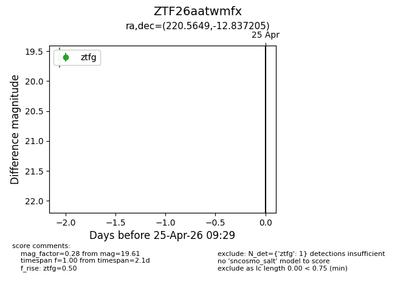
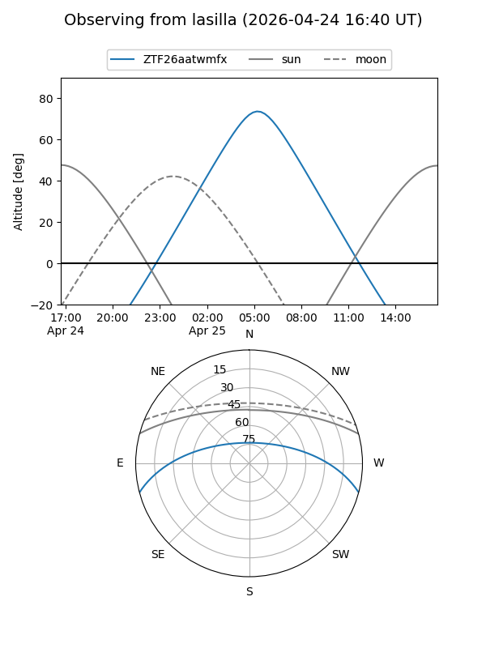
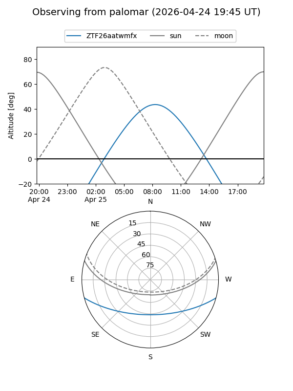

ZTF26aatwmfx
Target ZTF26aatwmfx at 2026-04-25 09:30
Aliases and brokers:
FINK: link
Lasair: link
ALeRCE: link
alt names
ZTF26aatwmfx (ztf,fink_ztf)
Coordinates:
equatorial (ra, dec) = 220.5649,-12.83720
equatorial (HMS+DMS) = 14:42:15.59,-12:50:13.94
galactic (l, b) = (340.4041,+41.83168)
Flags:
Photometry:
last ztfg=19.61
1 ztfg detections
Lightcurve

Visibility


Additional plots